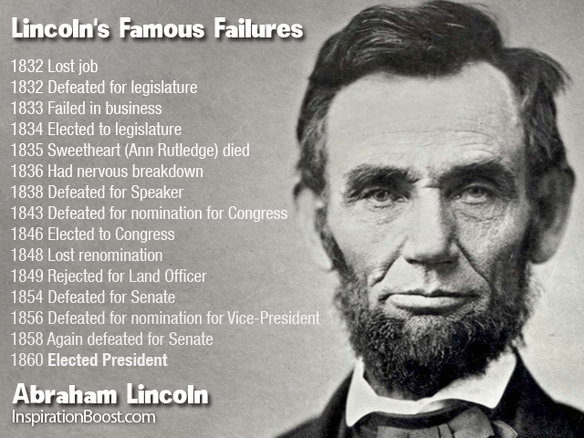

No one born to be successful but everyone born to discover. Even the 16th President of the United States, Abraham Lincoln, was many failures before he became the leader of the free world. Therefore, failures are just another discoveries.
It is a long journey to success and we all know it, but there are helps out there to ease the transition. If you have 5 minutes, check out the links above. You will thank yourself afterward.
It Depends On You Who You Want To Be